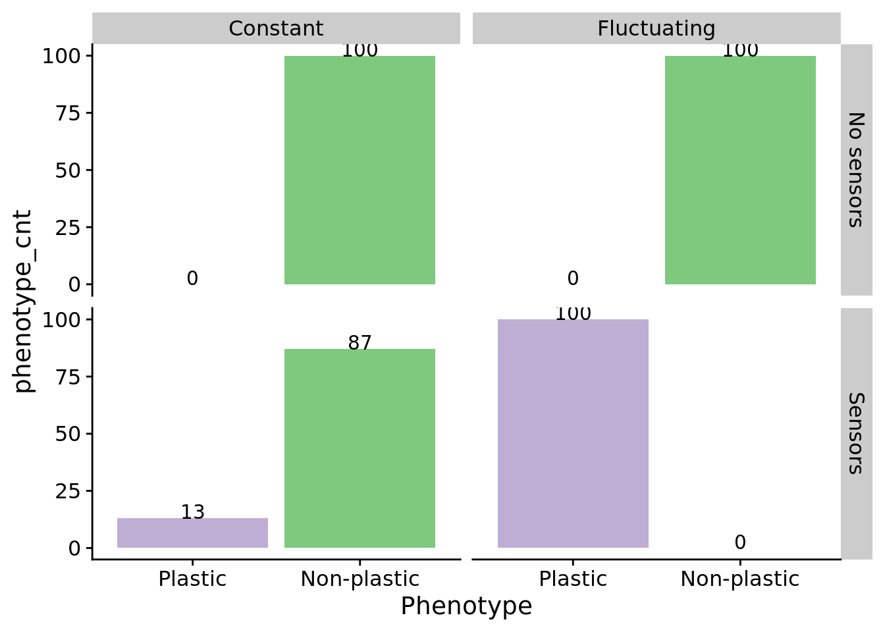
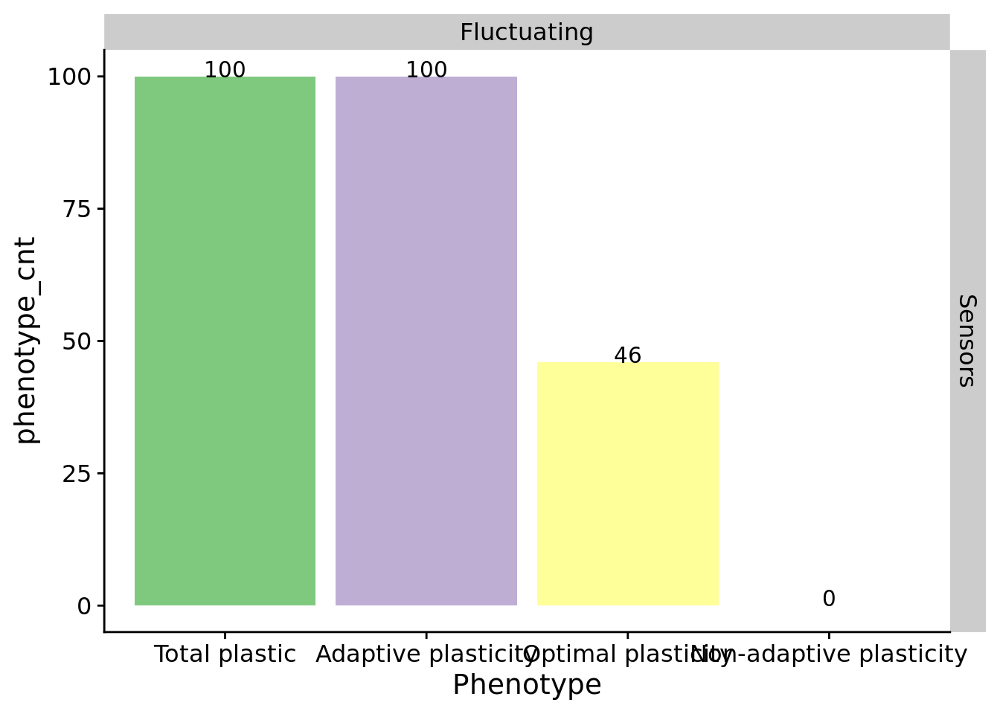

Chapter 2 Validation experiment
In this experiment, we validate that (1) we observe the evolution of phenotypic plasticity in a changing environment when digital organisms have access to sensory instructions (capable of differentiating environmental states) and (2) that adaptive phenotypic plasticity does not evolve when populations lack access to sensory instructions.
2.1 Overview
total_updates <- 200000
replicates <- 100
all_traits <- c("not","nand","and","ornot","or","andnot")
traits_set_a <- c("not", "and", "or")
traits_set_b <- c("nand", "ornot", "andnot")
# Relative location of data.
working_directory <- "experiments/2021-01-07-validation/analysis/" # << For bookdown
# working_directory <- "./" # << For local analysisWe evolved populations of digital organisms under four conditions:
- A fluctuating environment with access to sensory instructions
- A fluctuating environment without access to sensory instructions (i.e., sensory instructions are no-operations)
- A constant environment with access to sensory instructions
- A constant environment without access to sensory instructions
In fluctuating environments, we alternate between rewarding and punishing different sets of computational tasks. In one environment, we reward tasks not, and, or and punish tasks nand, ornot, andnot. In the alternative environment, we reward tasks nand, ornot, andnot and punish tasks not, and, or. In constant environments, we reward all tasks (not, nand, and, ornot, or, andnot).
For each replicate of each condition, we extract the dominant (i.e., most numerous) genotype at the end of the run to analyze further. We expect to observe the evolution of adaptive phenotypic plasticity in only the first experimental condition. In conditions without sensors, plasticity in any form should be unable to evolve.
2.2 Analysis dependencies
Load all required R libraries.
library(ggplot2)
library(tidyverse)
library(cowplot)
source("https://gist.githubusercontent.com/benmarwick/2a1bb0133ff568cbe28d/raw/fb53bd97121f7f9ce947837ef1a4c65a73bffb3f/geom_flat_violin.R")These analyses were conducted/knitted with the following computing environment:
## _
## platform x86_64-pc-linux-gnu
## arch x86_64
## os linux-gnu
## system x86_64, linux-gnu
## status
## major 4
## minor 0.3
## year 2020
## month 10
## day 10
## svn rev 79318
## language R
## version.string R version 4.0.3 (2020-10-10)
## nickname Bunny-Wunnies Freak Out2.3 Setup
data_loc <- paste0(working_directory, "data/aggregate.csv")
data <- read.csv(data_loc, na.strings="NONE")
data$DISABLE_REACTION_SENSORS <- as.factor(data$DISABLE_REACTION_SENSORS)
data$chg_env <- as.factor(data$chg_env)
data$dom_plastic_odd_even <- as.factor(data$dom_plastic_odd_even)
data$sensors <- data$DISABLE_REACTION_SENSORS == "0"
data$is_plastic <- data$dom_plastic_odd_even == "True"
env_label_fun <- function(chg_env) {
if (chg_env) {
return("Fluctuating")
} else {
return("Constant")
}
}
sensors_label_fun <- function(has_sensors) {
if (has_sensors) {
return("Sensors")
} else {
return("No sensors")
}
}
# Count observed plasticity for each condition (I'm sure there's a 'tidier' way to do this..)
observed_plasticity <- data.frame(
environment=character(),
sensors=character(),
plastic=integer(),
nonplastic=integer(),
plastic_adaptive=integer(),
plastic_optimal=integer(),
plastic_nonadaptive=integer()
)
for (env_chg in levels(data$chg_env)) {
for (disabled_sensors in levels(data$DISABLE_REACTION_SENSORS)) {
cond_data <- filter(data, chg_env == env_chg & data$DISABLE_REACTION_SENSORS == disabled_sensors)
environment_label <- env_label_fun(env_chg)
sensors_label <- sensors_label_fun(disabled_sensors == "0")
observed_plasticity <- observed_plasticity %>% add_row(
environment=environment_label,
sensors=sensors_label,
plastic=nrow(filter(cond_data, is_plastic==TRUE)),
nonplastic=nrow(filter(cond_data, is_plastic==FALSE)),
plastic_adaptive=nrow(filter(cond_data, dom_adaptive_plasticity=="True")),
plastic_optimal=nrow(filter(cond_data, dom_optimal_plastic=="True")),
plastic_nonadaptive=nrow(filter(cond_data, is_plastic==TRUE & dom_adaptive_plasticity=="False"))
)
}
}
observed_plasticity <- pivot_longer(
observed_plasticity,
cols=c("plastic", "plastic_adaptive", "plastic_optimal", "plastic_nonadaptive", "nonplastic"),
names_to="phenotype",
values_to="phenotype_cnt"
)
####### misc #######
# Configure our default graphing theme
theme_set(theme_cowplot())2.4 Evolution of phenotypic plasticity
For each experimental condition, do we observe the evolution of phenotypic plasticity? To test for phenotypic plasticity, we culture digital organisms in both environments from the fluctuating condition (including organisms evolved in a constant environment). Any plasticity that we observe from digital organisms evolved under constant conditions is cryptic variation (as these organisms were never exposed to these culturing environments).
ggplot(filter(observed_plasticity, phenotype %in% c("plastic", "nonplastic")), aes(x=phenotype, y=phenotype_cnt, fill=phenotype)) +
geom_bar(
stat="identity",
position=position_dodge(0.9)
) +
geom_text(
stat="identity",
mapping=aes(label=phenotype_cnt),
vjust=0.05
) +
scale_fill_brewer(palette="Accent") +
scale_x_discrete(
name="Phenotype",
limits=c("plastic", "nonplastic"),
labels=c("Plastic", "Non-plastic")
) +
facet_grid(sensors~environment) +
theme(
legend.position="none"
)
Indeed, we do not observe the evolution of phenotypic plasticity in any replicates in which digital organisms do not have access to sensory instructions. We do observe the evolution of plasticity (not necessarily adaptive plasticity) in both constant and fluctuating environments where sensors are enabled.
To what extent is the observed phenotypic plasticity adaptive?
ggplot(filter(observed_plasticity, environment=="Fluctuating" & sensors == "Sensors" & phenotype %in% c("plastic", "plastic_adaptive", "plastic_optimal", "plastic_nonadaptive")), aes(x=phenotype, y=phenotype_cnt, fill=phenotype)) +
geom_bar(
stat="identity",
position=position_dodge(0.9)
) +
geom_text(
stat="identity",
mapping=aes(label=phenotype_cnt),
vjust=0.05
) +
scale_fill_brewer(palette="Accent") +
scale_x_discrete(
name="Phenotype",
limits=c("plastic", "plastic_adaptive", "plastic_optimal", "plastic_nonadaptive"),
labels=c("Total plastic", "Adaptive plasticity", "Optimal plasticity", "Non-adaptive plasticity")
) +
facet_grid(sensors~environment) +
theme(
legend.position="none"
)